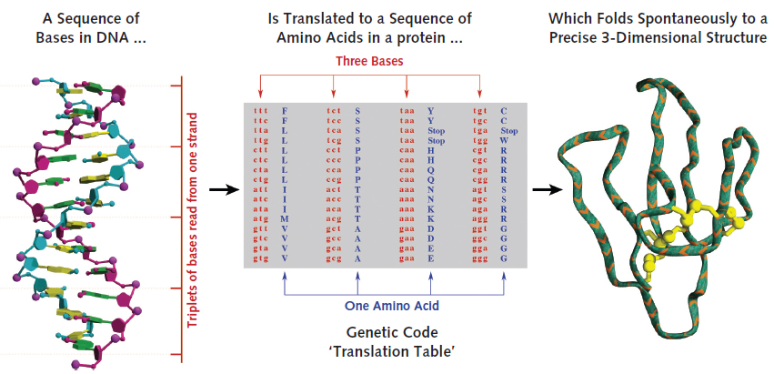
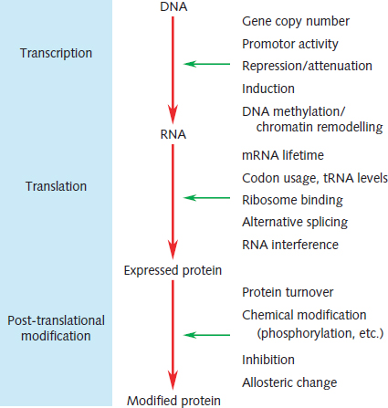
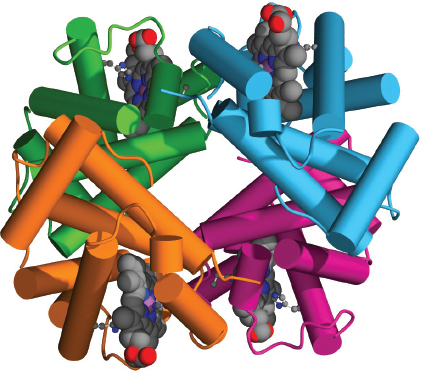

Part A · The biological system · Page 3 of 13
Genes and gene expression
Nearly every cell in your body carries the same DNA, yet a liver cell and a red-blood-cell precursor make very different proteins. This page follows the path from a gene's DNA to RNA to protein, shows where along that path cells control how much of each product is made, and explains how gene activity is measured. Those measurements (expression levels, eQTLs, TWAS) are what Lecture 1 and the post-GWAS sessions build on.
The gene-expression pipeline, with four control points
DNA is stored in the nucleus and is (nearly) the same in every cell. A gene is copied into RNA (transcription), and the RNA is read to build a protein (translation). A gene's coding sequence decides which protein is made; its regulatory sequence decides when, where and how much. Cells control the output at four points: transcription, splicing, translation, and protein activity.
- A gene is a stretch of DNA that is copied into RNA. About 20,000 human genes encode proteins, yet their coding sequence covers only about 1% of the genome.
- The genetic code is a lookup table. Each three-base codon of the mRNA maps to one amino acid or to "stop", so the effect of a change in coding sequence on the protein can be read off the table.
- Most trait-associated variants are not in coding sequence. Many work on the regulatory side, changing how much of a gene's product is made and in which cell types.
- Expression can be measured. RNA sequencing gives an expression level for each gene in each sample: a quantitative trait. Variants associated with it (eQTLs) are found with the same regression as a GWAS.
- In the genotype–phenotype data matrix, a gene's expression would be one more phenotype column. UK Biobank does not have that column, so TWAS predicts it from genotypes using reference data such as GTEx.
What a gene is Core
Takeaway: a gene is a stretch of DNA that is copied into RNA. About 20,000 genes encode proteins, but the parts that code for protein cover only about 1% of the genome.
A gene is a stretch of DNA that a cell copies into a working RNA molecule. RNA (ribonucleic acid) is a single chain of nucleotides. It differs from a DNA strand in two ways: its sugar is ribose rather than deoxyribose, and it uses the base uracil (U) where DNA uses thymine (T).
For most genes that statistical geneticists study, the RNA is used to build a protein; these are protein-coding genes. Other genes make RNAs that do their job as RNA, without being translated into protein: non-coding RNAs (see the rest of the genome).
Where genes lie on the reference genome is recorded by gene annotation: a catalog of the position of every gene and of each of its parts. The standard human annotation, GENCODE1, lists 78,733 genes in release 50 (June 2026): 19,442 protein-coding genes, 35,885 long non-coding RNA genes, 7,608 small non-coding RNA genes and 14,702 pseudogenes2. The protein-coding count rises to 20,107 if one includes 665 "read-through" genes, whose RNAs run across two neighboring genes; this is why you will see both "about 19,000" and "about 20,000" protein-coding genes.
A gene is much longer than the part that codes for protein. Most genes can be copied into several RNA versions, called transcripts; taking one representative transcript per protein-coding gene (the MANE Select set3), the median gene spans about 22,500 base pairs of DNA, of which a median of about 1,300 code for amino acids4. Most of the rest is introns, which are copied into RNA and then removed (see gene anatomy).
Proteins do most of the work Core
Takeaway: a gene fixes the order of the amino acids in its protein, and the folded shape of that chain determines what the protein does.
A protein is a chain of amino acids that folds into a specific three-dimensional shape. Cells use 20 kinds of amino acid; all share the same backbone and differ in their side chain, and each is written with a three-letter or a one-letter abbreviation (methionine = Met = M). The gene sets the order of the amino acids, and the folded shape determines what the protein can do. A typical human protein is a few hundred amino acids long: the median is about 430 for one representative transcript per gene4. The β-globin protein made from HBB has 1478.

These six roles, with the examples used throughout this lecture, cover most of what you will meet in Lecture 1:
Transcription: DNA → RNA Core
Takeaway: the RNA copy of a gene matches one of the two DNA strands base for base (with U in place of T). Genes lie on both strands, so a gene's sequence can be the reverse complement of what the reference genome shows on its + strand.
The flow of sequence information in cells, from DNA to RNA to protein, is called the central dogma of molecular biology. Francis Crick stated it as a rule: sequence information can pass from nucleic acid to nucleic acid and from nucleic acid to protein, but not from protein back to nucleic acid12.
Transcription is the first step: the cell copies the DNA of a gene into RNA. The copying is done by RNA polymerase, an enzyme that binds DNA at the start of a gene, separates the two strands over a short stretch, and moves along one of them, the template strand. It builds the RNA one nucleotide at a time, pairing each new nucleotide with a template base (a template A gets a U, C gets a G, G gets a C, and T gets an A) and always adding to the RNA's 3′ end. The RNA therefore has the same sequence as the other DNA strand, the coding strand, except that it has U where the DNA has T. That is why gene sequences are written as the coding strand.
Each gene uses one strand as its template, and neighboring genes can use different strands. A gene whose coding strand is the reference genome's forward (+) strand reads left to right in genome coordinates; a gene on the reverse (−) strand reads right to left. The reference genome, and genotype files such as VCF, give alleles on the + strand (see strands in SNP data), while descriptions of a gene use its coding strand. For a gene on the − strand, the two descriptions are reverse complements of each other.
RNA polymerase copies the whole gene, introns included, starting at the transcription start site (TSS) and continuing past the end of the last exon. This first copy is the pre-mRNA (or primary transcript). Before it can be used, it is processed into messenger RNA (mRNA), the version that leaves the nucleus and is read to make a protein.
Gene anatomy: exons, introns and splicing Core
Takeaway: only a small part of a gene ends up in its mRNA. Splicing cuts out the introns and joins the exons, and only the coding sequence within the exons is translated into protein.
The parts of a protein-coding gene, in the order RNA polymerase meets them along the coding strand:
- Promoter: DNA just upstream of the transcription start site, where RNA polymerase and its helper proteins bind. It is not itself copied into RNA.
- Exons: the segments that are kept in the mature mRNA.
- Introns: the segments between exons. They are copied into pre-mRNA and then cut out.
- Untranslated regions (UTRs): the two ends of the mRNA, which are not translated into protein. The 5′ UTR lies before the start codon and the 3′ UTR after the stop codon. In HBB they are the start of exon 1 and the end of exon 3; in some genes a UTR spans whole exons. They carry signals that affect how often and for how long the mRNA is translated.
- Coding sequence (CDS): the stretch from the start codon to the stop codon, which is translated into protein. It is split across the exons.
HBB is compact. A typical human protein-coding gene has more and longer introns: the median gene has 8 exons, the median exon is 133 bp and the median intron about 1,550 bp long, and exons make up a median of 13% of a gene's length (coding sequence alone, about 6%)4.
Splicing removes the introns from the pre-mRNA and joins the exons end to end. It is carried out by the spliceosome, a large complex of RNA and proteins that recognizes short sequences at each end of an intron (the splice sites). Nearly every intron begins with GU and ends with AG in the RNA (GT…AG in the DNA): 98.7% of 22,489 well-supported mammalian introns in one survey15. Variants that change these few bases often break splicing (splice-site variants).
Two more changes complete the mRNA: a 5′ cap, a modified G nucleotide, is added to its 5′ end, and a poly(A) tail, a run of A nucleotides, is added to its 3′ end: the RNA is cut a short distance after a signal in the 3′ UTR (most often AAUAAA), and the tail is added at the cut. The cap and tail protect the mRNA and help it leave the nucleus and be translated.
Many genes are spliced in more than one way. Alternative splicing keeps different sets of exons in different mRNAs, so one gene can make several transcripts and several versions of its protein. About 95% of human genes with more than one exon are alternatively spliced16,17, and which version dominates often differs between tissues17. GENCODE release 50 lists 644,292 transcripts for its 78,733 genes, about 8 per gene2.
Translation and the genetic code Core
Takeaway: the mRNA is read three bases at a time from the start codon, and a fixed table, the genetic code, gives the amino acid for each three-base codon, so the effect of a change in coding sequence can be looked up.
Translation turns the base sequence of an mRNA into a chain of amino acids. It takes place on ribosomes, large complexes of RNA and protein in the cytoplasm. A ribosome reads the mRNA from its 5′ end, three bases at a time; each group of three bases is a codon. Transfer RNAs (tRNAs) are short RNAs that each carry one kind of amino acid and have three bases (the anticodon) that pair with a matching codon. The ribosome links the amino acids they bring into a chain, in codon order.
The genetic code is the table that maps codons to amino acids. With four bases there are 4 × 4 × 4 = 64 codons: 61 specify the 20 amino acids and 3 (UAA, UAG, UGA) are stop codons, which end translation. AUG, which encodes methionine, is the usual start codon; translation usually begins at the first AUG of the mRNA. Most amino acids have two to six codons, which usually differ only in the third base. As a result, many changes at the third position of a codon do not change the protein (synonymous variants).
| 1st | 2nd = U | 2nd = C | 2nd = A | 2nd = G |
|---|---|---|---|---|
| U | UUU Phe (F) UUC Phe (F) UUA Leu (L) UUG Leu (L) | UCU Ser (S) UCC Ser (S) UCA Ser (S) UCG Ser (S) | UAU Tyr (Y) UAC Tyr (Y) UAA Stop UAG Stop | UGU Cys (C) UGC Cys (C) UGA Stop UGG Trp (W) |
| C | CUU Leu (L) CUC Leu (L) CUA Leu (L) CUG Leu (L) | CCU Pro (P) CCC Pro (P) CCA Pro (P) CCG Pro (P) | CAU His (H) CAC His (H) CAA Gln (Q) CAG Gln (Q) | CGU Arg (R) CGC Arg (R) CGA Arg (R) CGG Arg (R) |
| A | AUU Ile (I) AUC Ile (I) AUA Ile (I) AUG Met (M) | ACU Thr (T) ACC Thr (T) ACA Thr (T) ACG Thr (T) | AAU Asn (N) AAC Asn (N) AAA Lys (K) AAG Lys (K) | AGU Ser (S) AGC Ser (S) AGA Arg (R) AGG Arg (R) |
| G | GUU Val (V) GUC Val (V) GUA Val (V) GUG Val (V) | GCU Ala (A) GCC Ala (A) GCA Ala (A) GCG Ala (A) | GAU Asp (D) GAC Asp (D) GAA Glu (E) GAG Glu (E) | GGU Gly (G) GGC Gly (G) GGA Gly (G) GGG Gly (G) |
Because codons do not overlap and nothing marks where one ends and the next begins, the start codon fixes the reading frame: which bases are read together. Inserting or deleting one or two bases in the coding sequence shifts the frame for everything after it (a frameshift; see the variation page).
Worked example: the HBB mRNA begins …ACACC AUG GUG CAU CUG ACU CCU GAG GAG AAG UCU…, which the ribosome reads as Met-Val-His-Leu-Thr-Pro-Glu-Glu-Lys-Ser. Codon 3 is CAU in the reference genome, but 71% of chromosomes in 1000 Genomes carry CAC (the C allele of the synonymous variant rs713040)14. Both codons encode histidine: the code is redundant, and the reference genome does not always carry the most common allele. A numbering trap: the cell removes the first methionine from the finished β-globin chain, leaving 146 amino acids, and many sources, MedlinePlus among them, number from the valine that follows. They write the sickle-cell change (codon 7 here; p.Glu7Val in HGVS notation) as Glu6Val8,20.
What to notice. Only 27 of the 63 base pairs (24 coding bases plus the stop codon) are read as codons; the promoter, the UTRs and the intron are not translated, yet each is needed to make the protein. The codon for amino acid 5 (AGG, arginine) is assembled from two bases of exon 1 and one of exon 2, so splicing must be exact to the base. If the intron is kept, the ribosome reads into it and meets a stop codon after five amino acids.
Gene regulation: when, where and how much Core
Takeaway: cells control how much of each gene's product they make, mainly through proteins that bind regulatory DNA near or far from the gene. Many trait-associated variants act by changing this control rather than the protein.
Every cell carries the same genes, but each cell type uses a different subset: red-cell precursors make large amounts of β-globin, liver cells make albumin, and neither makes much of the other's protein. Gene expression is the making of a gene's product (its RNA and, for a protein-coding gene, its protein); the amount made is the gene's expression level. Gene regulation is the control of when, where and how much each gene is expressed. Much of it acts on transcription, the first control point of the mental model.
Transcription factors are proteins that bind short, specific DNA sequences (binding motifs) and raise or lower the transcription of nearby genes. Humans have more than 1,600 of them21. The DNA sequences that transcription factors bind are grouped into regulatory elements:
- the promoter, at the transcription start site, where RNA polymerase is recruited;
- enhancers, stretches of DNA that bind transcription factors and increase the transcription of a gene. An enhancer can lie upstream or downstream of its target gene, inside one of its introns, or inside a different gene, from a few kilobases up to about a million bases away22. One enhancer of the SHH gene, for example, lies about 1 Mb away, inside an intron of another gene, LMBR123;
- silencers, which bind proteins that reduce transcription.
An enhancer reaches a distant promoter through DNA looping: the DNA between them folds so that the proteins bound at the enhancer touch the proteins at the promoter22.
Whether a transcription factor can reach its motif depends on how the DNA is packed. In the nucleus, DNA is wrapped around histone proteins to form nucleosomes (see cells and chromosomes). Where nucleosomes are packed tightly the DNA is closed; active promoters and enhancers are open, with few or no nucleosomes. This chromatin accessibility differs between cell types and can be measured across the whole genome, for example by DNase I hypersensitivity mapping or ATAC-seq, assays that cut or tag only accessible DNA5,24. A DNase I hypersensitive site is a short stretch that the enzyme DNase I cuts easily because it is not covered by nucleosomes, a mark of an active regulatory element. Combining such data from many cell types, the ENCODE project (Encyclopedia of DNA Elements) built a registry of 926,535 candidate regulatory elements covering 7.9% of the human genome5.
DNA methylation is the attachment of a methyl group (CH3) to a cytosine base. In human DNA it occurs mostly at CpG sites: a C followed by a G on the same strand (the "p" stands for the phosphate between them). Most CpG sites in the genome are methylated (70–80%), but CpG islands, CpG-rich stretches at the promoters of about 60% of protein-coding genes, usually are not25. Methylation of a promoter's CpG island is associated with the gene being switched off26.
When a cell divides, its pattern of DNA methylation is copied onto the newly made DNA, so the daughter cells keep the same marks27. Epigenetic marks are chemical changes to DNA or to histones that affect gene activity without changing the DNA sequence and that persist through cell division. They help each cell type keep its identity, they differ between cell types, and some change during life27.
Regulation also acts after transcription: on splicing, on how often and for how long an mRNA is translated, and on how active a protein is and how fast it is broken down (control points 2–4 of the mental model). The figure below lists such mechanisms; you do not need the details for Lecture 1.

Regulatory effects come in two kinds, and the words return in eQTL studies. A regulatory element acts in cis: it affects genes on the same DNA molecule, usually nearby. A transcription factor acts in trans: it is a protein, made from a gene that can be anywhere in the genome, and it can act on matching motifs on any chromosome. A variant in an enhancer therefore has a cis effect; a variant that changes a transcription factor can have trans effects on many genes.
Worked story: fetal hemoglobin and BCL11A Core
Takeaway: a GWAS variant can matter without changing any protein. Here a non-coding variant lowers BCL11A expression only in red-cell precursors, which raises fetal hemoglobin and makes sickle cell disease and β-thalassemia milder; a gene therapy now edits the same stretch of DNA.
The story uses every idea on this page (a family of genes switched on and off during development, a transcription factor, a GWAS hit in an enhancer) and is the example on Lecture 1 slide 17.
Hemoglobin is made of four globin chains, each holding a heme group that binds oxygen. From a few months after birth, most hemoglobin is adult hemoglobin (HbA): two α chains and two β chains (α2β2). Before birth, most is fetal hemoglobin (HbF): two α chains and two γ chains (α2γ2)31,32. The γ chains come from two genes, HBG1 and HBG2, and the β chain from HBB.
The β-like globin genes sit together on chromosome 11, in the order in which they are used during development: HBE1 (ε, embryo), HBG2 and HBG1 (γ, fetus), then HBD (δ) and HBB (β, after birth), with a pseudogene (HBBP1) among them13. Upstream lies the locus control region (LCR), five DNase I hypersensitive sites 6–22 kb upstream of HBE1 that act as a strong enhancer for whichever globin gene is active33. Around birth, red-cell precursors switch from γ to β: HbF falls from 50–80% of all hemoglobin in newborns to about 8% at six months and 1–2% after that; healthy adults have 0.8–2%34.

A hemoglobinopathy is an inherited disorder of hemoglobin. Two important ones involve HBB: sickle cell disease, caused by two copies of the rs334 variant or by rs334 together with another β-globin variant, and β-thalassemia, caused by variants that reduce or abolish β-globin production35,36. In both, people who keep more HbF have milder disease, because γ chains can take the place of the faulty or missing β chains37,38.
Because HbF level matters so much, it has been studied by GWAS. A genome-wide scan of 4,305 people from Sardinia found that HbF level was strongly associated with a SNP inside BCL11A on chromosome 2 (rs11886868, p-value below 10−35)39, and other studies found the same locus38,40. BCL11A encodes a transcription factor. Follow-up experiments showed that BCL11A protein represses the γ-globin genes in adult red-cell precursors41, and that removing BCL11A in adult mice carrying human sickle-cell globin genes restored high HbF and corrected the disease32.
The associated SNPs do not change the BCL11A protein. They lie in intron 2 of the gene, in a cluster of three DNase I hypersensitive sites, named +55, +58 and +62 for their distance in kilobases from the transcription start site, which together act as an enhancer only in red-cell precursors (erythroid cells). In 1,178 people with sickle cell disease, the strongest association with HbF was at rs1427407 in the +62 site (p-value 7.23 × 10−50). Its T allele disrupts a binding motif for GATA1 and TAL1, two transcription factors of red-cell precursors; less of them binds, somewhat less BCL11A is made, and HbF rises42. The enhancer is needed for BCL11A expression in red-cell precursors but not in B cells (a type of white blood cell), so disrupting it lowers BCL11A only in the cells where the γ genes are to be switched back on42.
This enhancer became the target of a gene therapy, exagamglogene autotemcel (exa-cel, sold as Casgevy). Blood stem cells (hematopoietic stem cells, collected as CD34+ cells, which carry the surface protein CD34) are taken from the patient, and CRISPR-Cas9, a tool that cuts DNA at a chosen sequence, is used to cut the erythroid enhancer of BCL11A in these cells. The patient receives chemotherapy to clear the bone marrow, and the edited cells are infused back43,44. In phase 3 trials, 29 of 30 evaluable people with severe sickle cell disease had no severe pain crises (vaso-occlusive crises) for at least 12 months44, and 32 of 35 people with transfusion-dependent β-thalassemia no longer needed transfusions48. The UK approved exa-cel for both diseases in November 202345; the US approved it for sickle cell disease in December 2023 and for β-thalassemia in January 202446,47.
Measuring gene expression: RNA-seq, eQTLs and TWAS Core
Takeaway: a gene's expression level is a measurable quantitative trait. eQTL mapping regresses it on genotype exactly as a GWAS does, and TWAS predicts it from genotypes so that cohorts without RNA data, such as UK Biobank, can still test it.
The transcriptome is the set of all RNA molecules in a cell or tissue sample. Unlike the genome, it differs between cell types and changes over time. It is measured by RNA sequencing (RNA-seq): RNA is extracted from the sample, copied into DNA, broken into short pieces and sequenced; each sequence read (GTEx used reads of 76 bases, a median of 78 million per sample) is matched to the reference genome, and the reads are counted per gene50,51.
Raw counts depend on the gene's length (a longer RNA gives more reads) and on how many reads were sequenced from the sample. A common normalization is TPM (transcripts per million): divide each gene's count by its length, then rescale so that the values in each sample add up to one million52. For eQTL analysis, expression values are further normalized and adjusted for technical factors, then treated like any other quantitative trait51.
Tissues such as heart, brain or liver cannot be sampled from large numbers of living volunteers, so reference atlases collect them after death. The Genotype-Tissue Expression (GTEx) project sequenced RNA from 19,788 samples of 54 tissues from 946 deceased donors (releases V10 and V11)53 and sequenced the donors' genomes, so expression can be related to genotype54. The heatmap shows how sharply some genes are restricted to one tissue.
An expression quantitative trait locus (eQTL) is a genetic variant whose genotype is associated with the expression level of a gene. It is found with the same regression as a GWAS, with one gene's expression as the trait; for person \(i\) the model is
- \(e_i\)
- Expression level of the gene in person \(i\), measured in one tissue and normalized.
- \(\alpha\)
- Intercept: the expected expression of a person with \(g_i = 0\) and every covariate at 0.
- \(\beta\)
- The eQTL effect size: the change in expected expression per additional copy of the counted allele.
- \(g_i\)
- Genotype of person \(i\) at the variant: 0, 1 or 2 copies of the counted allele.
- \(\boldsymbol{\gamma}^{\top}\mathbf{c}_i\)
- Covariate term: \(\mathbf{c}_i\) holds the covariates of person \(i\) (GTEx's are listed below) and \(\boldsymbol{\gamma}\) their coefficients; the term is the sum of each covariate times its coefficient.
- \(\varepsilon_i\)
- Error: the part of \(e_i\) that the genotype and the covariates do not explain.
With the covariates held fixed, people with 0, 1 and 2 copies have expected expression \(\alpha\), \(\alpha + \beta\) and \(\alpha + 2\beta\): a straight line in \(g_i\) with slope \(\beta\), so each copy adds the same amount. \(\beta = 0\) means that the genotype does not shift expression, and the test asks whether the estimate \(\hat{\beta}\) is further from 0 than chance allows. The sign of \(\beta\) says which allele raises expression, and it flips if the other allele is counted. The covariate term takes out the differences in expression that the covariates explain: without it, differences that track ancestry could be attributed to \(g_i\), and technical variation would add noise to \(\hat{\beta}\).
GTEx tests the variants within 1 Mb of each gene's transcription start site, with covariates such as sex, genotype principal components and hidden technical factors; these local associations are cis-eQTLs, and associations with variants elsewhere in the genome are trans-eQTLs51.
Cis-eQTLs are everywhere: in GTEx whole blood, 13,903 of the 20,993 expressed genes have at least one (release V10)53, and across tissues regulatory associations are found for almost all genes54. Trans-eQTLs are much harder to detect; the 2017 GTEx analysis found them for only 93 genes51.
A transcriptome-wide association study (TWAS) asks whether the genetically predicted expression of a gene is associated with a trait. It needs two datasets. In a reference panel with both genotypes and expression (for example one GTEx tissue), a model is trained to predict a gene's expression from the genotypes of nearby SNPs. In a GWAS cohort that has genotypes and the trait but no expression (for example UK Biobank), the model's weights are applied to each person's genotypes to predict expression, and predicted expression is tested against the trait, one gene at a time55,56. Two widely used implementations are PrediXcan and FUSION; FUSION can work from GWAS summary statistics alone55,56.
A TWAS association does not prove that the gene causes the trait. Neighboring genes often share eQTLs, or have eQTLs that are correlated with each other (in linkage disequilibrium; see the haplotypes and LD page), so several genes at one locus can all show association; predictions trained in a tissue that is not relevant to the trait can also point to the wrong gene57.
The same idea applies to proteins. A protein quantitative trait locus (pQTL) is a variant associated with the level of a protein. UK Biobank's Pharma Proteomics Project measured 2,923 proteins in the blood plasma of 54,219 participants (Olink Explore 3072 assay) and found 14,287 primary genetic associations, 81% of them new58. The measuring phenotypes page describes these data.
What is in the rest of the genome Optional
Protein-coding sequence is about 1% of the genome. GENCODE sorts the genes into these groups2:
| Group | Genes | What they are |
|---|---|---|
| Protein-coding genes | 19,442 | Their mRNAs are translated into proteins. |
| Long non-coding RNA genes | 35,885 | Transcribed, and often spliced, like protein-coding genes, but not translated. |
| Small non-coding RNA genes | 7,608 | Short RNAs, for example microRNAs, which lower the translation of matching mRNAs, and the small RNAs of the spliceosome. |
| Pseudogenes | 14,702 | Copies of genes that can no longer make a working protein, such as HBBP1 in the β-globin cluster. |
A non-coding RNA is an RNA that works without being translated; transfer RNAs, the RNAs of the ribosome and the spliceosome, and microRNAs are examples. A pseudogene is a gene copy that has lost the ability to make a working protein.
Outside genes, regulatory elements take up a further share: ENCODE's candidate regulatory elements cover 7.9% of the genome5. About half of the genome consists of repeated sequences. Most of these (48% of the sequenced bases of GRCh38) are copies of transposable elements, DNA sequences that can copy themselves to new places in the genome; the largest classes are LINEs (long interspersed nuclear elements, 21.8%) and SINEs (short interspersed nuclear elements, 13.4%)6. Counting every kind of repeat, the complete T2T-CHM13 genome is 54% repeats62. Repeats matter for statistical genetics mainly because short sequencing reads cannot be placed uniquely within them, so variants in repeats are harder to genotype (see from a blood sample to genotypes).
Gene names and symbols Core
Takeaway: write gene symbols in italics and protein names in roman type, and match genes across files by Ensembl gene ID, because symbols can change.
Each human gene has an official gene symbol and name, approved by the HUGO Gene Nomenclature Committee (HGNC)63. Human gene symbols are usually written in capital letters, in italics when they mean the gene (HBB) and in roman type when they mean the protein (HBB protein, or by its own name, β-globin). Symbols can change as more is learned about a gene: ACKR1, the Duffy blood-group gene, was previously called FY and DARC; its symbol last changed in 201464. Database identifiers are more stable, so match genes across files by Ensembl gene ID (ENSG…; ignore the version number after the dot) rather than by symbol.
| Symbol | Approved name | Location | Ensembl gene ID | Where it appears |
|---|---|---|---|---|
| ALDH2 | aldehyde dehydrogenase 2 family member | 12q24.12 | ENSG00000111275 | rs671, alcohol flushing (Lecture 1, slide 68) |
| HBB | hemoglobin subunit beta | 11p15.4 | ENSG00000244734 | rs334, sickle cell disease; worked examples on this page |
| BCL11A | BCL11 transcription factor A | 2p16.1 | ENSG00000119866 | rs1427407, fetal hemoglobin (slide 17) |
| PCSK9 | proprotein convertase subtilisin/kexin type 9 | 1p32.3 | ENSG00000169174 | rs11591147 (R46L), lower LDL cholesterol (slides 15–16) |
| LDLR | low density lipoprotein receptor | 19p13.2 | ENSG00000130164 | the LDL receptor; familial hypercholesterolemia |
| APOE | apolipoprotein E | 19q13.32 | ENSG00000130203 | rs429358 and rs7412, which define the ε2, ε3 and ε4 alleles |
| LPA | lipoprotein(a) | 6q25.3–q26 | ENSG00000198670 | lipoprotein(a) levels |
| MTHFR | methylenetetrahydrofolate reductase | 1p36.22 | ENSG00000177000 | rs1801133, "C677T" (slides 74 and 77) |
| LCT | lactase | 2q21.3 | ENSG00000115850 | lactase persistence |
| MCM6 | minichromosome maintenance complex component 6 | 2q21.3 | ENSG00000076003 | its intron holds rs4988235, which acts on LCT |
| ANGPTL3 | angiopoietin like 3 | 1p31.3 | ENSG00000132855 | a liver protein in lipid metabolism8; two loss-of-function copies give very low LDL cholesterol (slide 15) |
| ACKR1 | atypical chemokine receptor 1 (Duffy blood group) | 1q23.2 | ENSG00000213088 | rs2814778, Duffy-null |
Check your understanding
A liver cell and a red-blood-cell precursor from the same person carry the same DNA. Why do they make different proteins?
They express different genes. Each cell type has its own set of active transcription factors, open chromatin and DNA methylation, so different promoters and enhancers are in use. Red-cell precursors transcribe HBB at very high levels; liver cells transcribe ALB. The DNA sequence is the same; the regulation differs.
HBB lies on the − strand. Its coding sequence starts with ATG. What do you see at chr11:5,227,019–5,227,021 in the reference genome, and what is the first codon of the mRNA?
The reference genome is written on the + strand, so you see CAT, the reverse complement of ATG. The mRNA has the coding-strand sequence with U for T, so its first codon is AUG (methionine).
rs1427407 is in an intron of BCL11A, and introns are removed from the mRNA. How can it change anything?
Splicing removes the intron from the RNA, but the intron's DNA stays in the genome, and it contains an enhancer that is active in red-cell precursors. The T allele weakens a GATA1/TAL1 binding site in that enhancer, so less BCL11A is transcribed in those cells, the γ-globin genes are less repressed, and HbF rises. The variant changes how much protein is made, not the protein.
Why is deleting one base in codon 10 of a gene usually more damaging than changing the third base of codon 3?
A one-base deletion shifts the reading frame: every codon after it is read in a different frame, giving different amino acids and usually an early stop codon (a frameshift). A third-position change often gives a codon for the same amino acid (for example CAU → CAC, both histidine), so the protein is unchanged (a synonymous variant).
You want to know whether liver expression of a gene affects LDL cholesterol, using UK Biobank. What can you do without RNA data from the participants?
Use external expression data. (1) TWAS: take weights trained on GTEx liver samples, apply them to the UK Biobank genotypes to predict each participant's liver expression of the gene, and regress LDL cholesterol on it. (2) Colocalization: check whether the LDL GWAS signal and a GTEx liver eQTL for the gene share a causal variant. (3) If the gene's protein is in the UK Biobank plasma panel, use the protein levels or pQTLs. In each case match genome builds, and remember that a TWAS association alone does not prove the gene is causal.
In a cis-eQTL analysis in GTEx, what are the outcome, the predictor and the covariates?
Outcome: the normalized expression level of one gene across donors (in one tissue). Predictor: the genotype (0, 1 or 2 copies of one allele) at one variant within 1 Mb of the gene's transcription start site. Covariates: sex, genotype principal components, sequencing platform and hidden technical factors estimated from the expression data. It is the GWAS regression, repeated for every gene–variant pair.
Learn more
- How do genes direct the production of proteins? · MedlinePlus Genetics intro — transcription and translation in plain language.
- Transcription & Translation: The Central Dogma of Biology and mRNA Splicing · DNA Learning Center (3D animations) intro — the molecules in motion.
- DNA Transcription (Basic Detail) and Translation (Basic Detail) · HHMI BioInteractive intro — short animations.
- Transcribe and Translate a Gene · Learn.Genetics, University of Utah intro — decode a gene yourself with the genetic code.
- Can genes be turned on and off in cells? and What is epigenetics? · MedlinePlus Genetics intro — gene regulation and epigenetic marks.
- From DNA to RNA and From RNA to Protein · Alberts et al., Molecular Biology of the Cell, NCBI Bookshelf intermediate — textbook depth on transcription, splicing and translation.
- GTEx Portal · Broad Institute / NIH intermediate — look up any gene's expression by tissue and its eQTLs.
- SCREEN: candidate regulatory elements · ENCODE intermediate — browse promoters and enhancers near a gene or variant.
- Opportunities and challenges for transcriptome-wide association studies · Wainberg et al., Nature Genetics 2019 advanced — why TWAS hits are not necessarily causal genes.
- HGNC: HUGO Gene Nomenclature Committee · genenames.org intro — official symbols, names and previous symbols of human genes.
Sources for this page
- Frankish A, et al. (2023). GENCODE: reference annotation for the human and mouse genomes in 2023. Nucleic Acids Research 51:D942–D949. doi:10.1093/nar/gkac1071
- GENCODE. Human release 50 (GRCh38.p14; equivalent to Ensembl 116, June 2026): summary statistics and release history. www.gencodegenes.org/human/stats.html; www.gencodegenes.org/human/releases.html (accessed 21 Oct 2026).
- Morales J, et al. (2022). A joint NCBI and EMBL-EBI transcript set for clinical genomics and research. Nature 604:310–315. doi:10.1038/s41586-022-04558-8
- Computed for this lecture from the GENCODE release 50 annotation file, gencode.v50.annotation.gtf.gz (GENCODE FTP). Genome shares: union of intervals on chromosomes 1–22, X and Y of GRCh38 (3,088,269,832 bp). Gene-structure medians: the 19,229 MANE Select transcripts of protein-coding genes on those chromosomes; protein length = coding nucleotides ÷ 3 − 1 (stop codon).
- ENCODE Project Consortium, Moore JE, et al. (2020). Expanded encyclopaedias of DNA elements in the human and mouse genomes. Nature 583:699–710. doi:10.1038/s41586-020-2493-4
- Computed for this lecture from the UCSC Genome Browser hg38 RepeatMasker and gap tables, chromosomes 1–22, X and Y (2,937,659,104 bp of sequence after removing 150.6 Mb of gaps). UCSC downloads.
- Hindorff LA, et al. (2009). Potential etiologic and functional implications of genome-wide association loci for human diseases and traits. PNAS 106:9362–9367. doi:10.1073/pnas.0903103106
- UniProt Knowledgebase, reviewed human entries ALDH2 (P05091), LDLR (P01130), PCSK9 (Q8NBP7), HBB (P68871), INS (P01308), BCL11A (Q9H165) and ANGPTL3 (Q9Y5C1). uniprot.org (accessed 21 Oct 2026).
- MedlinePlus Genetics. What are proteins and what do they do? medlineplus.gov.
- ClinVar. Variation VCV000018390 (rs671, ALDH2*2). ncbi.nlm.nih.gov/clinvar (accessed 21 Oct 2026).
- Crabb DW, Edenberg HJ, Bosron WF, Li TK (1989). Genotypes for aldehyde dehydrogenase deficiency and alcohol sensitivity: the inactive ALDH2(2) allele is dominant. Journal of Clinical Investigation 83:314–316. doi:10.1172/JCI113875
- Crick F (1970). Central dogma of molecular biology. Nature 227:561–563. doi:10.1038/227561a0
- Ensembl release 116 (GRCh38.p14): HBB transcript ENST00000335295.4 (HBB-201; MANE Select, identical to RefSeq NM_000518.5), BCL11A (ENSG00000119866; canonical transcript ENST00000642384) and the β-globin cluster genes; sequences and coordinates from the Ensembl REST API, rest.ensembl.org (accessed 21 Oct 2026).
- Ensembl release 116 variant records for rs334, rs713040 and rs1427407: GRCh38 and GRCh37 positions, forward-strand alleles, and 1000 Genomes phase 3 allele frequencies (2,504 people). rest.ensembl.org (accessed 21 Oct 2026).
- Burset M, Seledtsov IA, Solovyev VV (2001). SpliceDB: database of canonical and non-canonical mammalian splice sites. Nucleic Acids Research 29:255–259. doi:10.1093/nar/29.1.255
- Pan Q, et al. (2008). Deep surveying of alternative splicing complexity in the human transcriptome by high-throughput sequencing. Nature Genetics 40:1413–1415. doi:10.1038/ng.259
- Wang ET, et al. (2008). Alternative isoform regulation in human tissue transcriptomes. Nature 456:470–476. doi:10.1038/nature07509
- Genome builds of UK Biobank genetic data: array and imputed genotypes on GRCh37 (Bycroft C, et al. (2018). Nature 562:203–209, doi:10.1038/s41586-018-0579-z); exome and genome sequences on GRCh38 (Backman JD, et al. (2021). Nature 599:628–634, doi:10.1038/s41586-021-04103-z).
- GENCODE. Release 50, GRCh37_mapping directory and its README: annotation built on GRCh38 and mapped back to GRCh37 with gencode-backmap, for users still working on GRCh37/hg19. GENCODE FTP (accessed 21 Oct 2026).
- MedlinePlus Genetics. HBB gene (hemoglobin subunit beta). medlineplus.gov.
- Lambert SA, et al. (2018). The human transcription factors. Cell 172:650–665. doi:10.1016/j.cell.2018.01.029
- Schoenfelder S, Fraser P (2019). Long-range enhancer–promoter contacts in gene expression control. Nature Reviews Genetics 20:437–455. doi:10.1038/s41576-019-0128-0
- Lettice LA, et al. (2003). A long-range Shh enhancer regulates expression in the developing limb and fin and is associated with preaxial polydactyly. Human Molecular Genetics 12:1725–1735. doi:10.1093/hmg/ddg180
- Buenrostro JD, et al. (2013). Transposition of native chromatin for fast and sensitive epigenomic profiling of open chromatin, DNA-binding proteins and nucleosome position. Nature Methods 10:1213–1218. doi:10.1038/nmeth.2688
- Illingworth RS, et al. (2010). Orphan CpG islands identify numerous conserved promoters in the mammalian genome. PLoS Genetics 6:e1001134. doi:10.1371/journal.pgen.1001134
- Greenberg MVC, Bourc'his D (2019). The diverse roles of DNA methylation in mammalian development and disease. Nature Reviews Molecular Cell Biology 20:590–607. doi:10.1038/s41580-019-0159-6
- Smith ZD, Meissner A (2013). DNA methylation: roles in mammalian development. Nature Reviews Genetics 14:204–220. doi:10.1038/nrg3354
- Maurano MT, et al. (2012). Systematic localization of common disease-associated variation in regulatory DNA. Science 337:1190–1195. doi:10.1126/science.1222794
- UK Biobank Data Showcase: Field 30414, Volume of RNA held by UKB (127,864 participants, 131,189 samples; version Aug 2025), and keyword searches for 'transcriptom' and 'methylation', which return no data-fields. biobank.ndph.ox.ac.uk/showcase (accessed 21 Oct 2026).
- UK Biobank news (12 June 2026). Landmark UK Biobank epigenetics study will reveal impact of genes and environment on health. ukbiobank.ac.uk (archived copy; release of the data not verified).
- Wilber A, Nienhuis AW, Persons DA (2011). Transcriptional regulation of fetal to adult hemoglobin switching: new therapeutic opportunities. Blood 117:3945–3953. doi:10.1182/blood-2010-11-316893
- Xu J, et al. (2011). Correction of sickle cell disease in adult mice by interference with fetal hemoglobin silencing. Science 334:993–996. doi:10.1126/science.1211053
- Lesk AM (2017). Introduction to Genomics, 3rd ed. Oxford University Press. Chapter 1, including Box 1.16 (control of the β-globin gene cluster).
- MedlinePlus Medical Encyclopedia. Hemoglobin electrophoresis: normal values (page reviewed 27 Feb 2026). medlineplus.gov.
- MedlinePlus Genetics. Sickle cell disease. medlineplus.gov.
- MedlinePlus Genetics. Beta thalassemia. medlineplus.gov.
- Sankaran VG, Orkin SH (2013). The switch from fetal to adult hemoglobin. Cold Spring Harbor Perspectives in Medicine 3:a011643. doi:10.1101/cshperspect.a011643
- Lettre G, et al. (2008). DNA polymorphisms at the BCL11A, HBS1L-MYB, and β-globin loci associate with fetal hemoglobin levels and pain crises in sickle cell disease. PNAS 105:11869–11874. doi:10.1073/pnas.0804799105
- Uda M, et al. (2008). Genome-wide association study shows BCL11A associated with persistent fetal hemoglobin and amelioration of the phenotype of β-thalassemia. PNAS 105:1620–1625. doi:10.1073/pnas.0711566105
- Menzel S, et al. (2007). A QTL influencing F cell production maps to a gene encoding a zinc-finger protein on chromosome 2p15. Nature Genetics 39:1197–1199. doi:10.1038/ng2108
- Sankaran VG, et al. (2008). Human fetal hemoglobin expression is regulated by the developmental stage-specific repressor BCL11A. Science 322:1839–1842. doi:10.1126/science.1165409
- Bauer DE, et al. (2013). An erythroid enhancer of BCL11A subject to genetic variation determines fetal hemoglobin level. Science 342:253–257. doi:10.1126/science.1242088
- Frangoul H, et al. (2021). CRISPR-Cas9 gene editing for sickle cell disease and β-thalassemia. New England Journal of Medicine 384:252–260. doi:10.1056/NEJMoa2031054
- Frangoul H, et al. (2024). Exagamglogene autotemcel for severe sickle cell disease. New England Journal of Medicine 390:1649–1662. doi:10.1056/NEJMoa2309676
- Medicines and Healthcare products Regulatory Agency (16 Nov 2023). MHRA authorises world-first gene therapy that aims to cure sickle-cell disease and transfusion-dependent β-thalassemia. gov.uk.
- US Food and Drug Administration (8 Dec 2023). FDA approves first gene therapies to treat patients with sickle cell disease. fda.gov.
- US Food and Drug Administration. CASGEVY (exagamglogene autotemcel): product page and approval letters, including the 16 Jan 2024 approval for transfusion-dependent β-thalassemia. fda.gov.
- Locatelli F, et al. (2024). Exagamglogene autotemcel for transfusion-dependent β-thalassemia. New England Journal of Medicine 390:1663–1676. doi:10.1056/NEJMoa2309673
- Enattah NS, et al. (2002). Identification of a variant associated with adult-type hypolactasia. Nature Genetics 30:233–237. doi:10.1038/ng826
- Stark R, Grzelak M, Hadfield J (2019). RNA sequencing: the teenage years. Nature Reviews Genetics 20:631–656. doi:10.1038/s41576-019-0150-2
- GTEx Consortium, Battle A, et al. (2017). Genetic effects on gene expression across human tissues. Nature 550:204–213. doi:10.1038/nature24277
- Wagner GP, Kin K, Lynch VJ (2012). Measurement of mRNA abundance using RNA-seq data: RPKM measure is inconsistent among samples. Theory in Biosciences 131:281–285. doi:10.1007/s12064-012-0162-3
- GTEx Portal, Analysis releases V10 and V11: dataset summary (946 donors, 54 tissues, 19,788 RNA-seq samples; GRCh38), median gene expression per tissue (V10) and eGene counts (V10), via the GTEx API v2. gtexportal.org (accessed 21 Oct 2026).
- GTEx Consortium (2020). The GTEx Consortium atlas of genetic regulatory effects across human tissues. Science 369:1318–1330. doi:10.1126/science.aaz1776
- Gamazon ER, et al. (2015). A gene-based association method for mapping traits using reference transcriptome data (PrediXcan). Nature Genetics 47:1091–1098. doi:10.1038/ng.3367
- Gusev A, et al. (2016). Integrative approaches for large-scale transcriptome-wide association studies (FUSION). Nature Genetics 48:245–252. doi:10.1038/ng.3506
- Wainberg M, et al. (2019). Opportunities and challenges for transcriptome-wide association studies. Nature Genetics 51:592–599. doi:10.1038/s41588-019-0385-z
- Sun BB, et al. (2023). Plasma proteomic associations with genetics and health in the UK Biobank. Nature 622:329–338. doi:10.1038/s41586-023-06592-6
- UK Biobank. Biological samples (sample table: Tempus RNA tubes, 120,000 at baseline). ukbiobank.ac.uk (archived copy).
- UK Biobank Data Showcase, category 1839 (Olink proteomics) and Field 30900 (number of proteins measured). biobank.ndph.ox.ac.uk.
- UK Biobank news (10 Jan 2025). Launch of world’s most significant protein study set to usher in new understanding for medicine. ukbiobank.ac.uk (archived copy).
- Hoyt SJ, et al. (2022). From telomere to telomere: the transcriptional and epigenetic state of human repeat elements. Science 376:eabk3112. doi:10.1126/science.abk3112
- Bruford EA, et al. (2020). Guidelines for human gene nomenclature. Nature Genetics 52:754–758. doi:10.1038/s41588-020-0669-3
- HUGO Gene Nomenclature Committee (HGNC). Symbol reports for the genes in the table (approved name, previous symbols, location, Ensembl gene ID). genenames.org (accessed 21 Oct 2026).